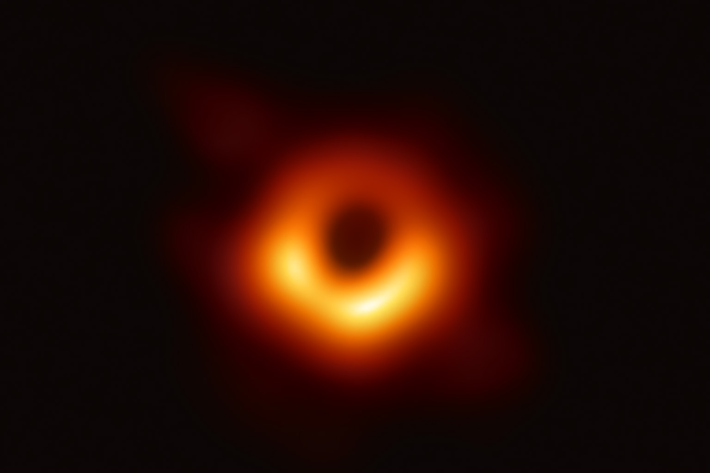

Today, the Event Horizon Telescope (EHT) Collaboration release the first images of the black hole at the center of the M87 Galaxy. The scientific results are summarized in six papers.
For many senior members in the collaboration, this is a dream of a whole decade came true. For myself, I officially joined the EHT about two years ago eventhough I started working on black hole since my Ph.D. It's surreal to see something that we could only simulate is now proven by observations.
And it's great to share our work to the world. Congratulations, everyone!